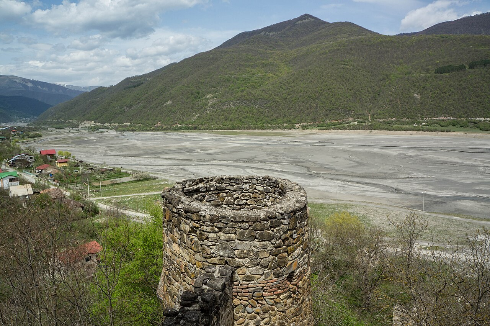
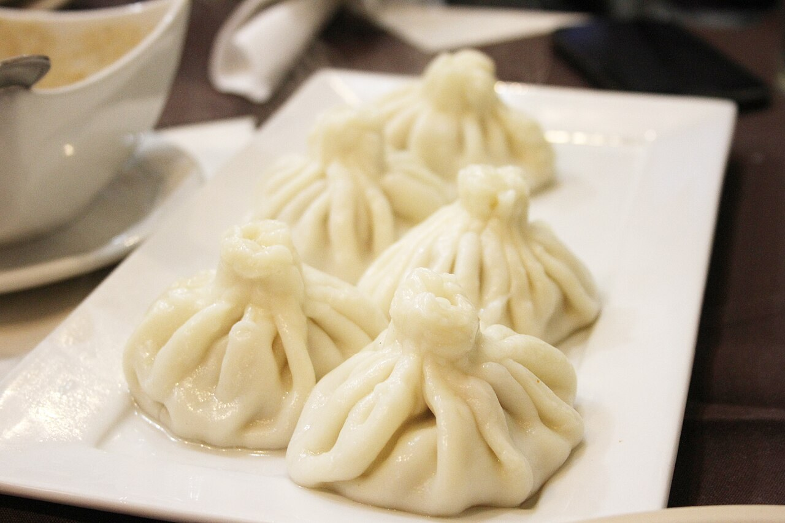

Полгода

Мясорубку уберите, мы её только для котлет держим. Вот вам два ножа, вот доска. Говядина слева, свинина справа, сначала каждую отдельно, потом вместе. Рубите двумя руками, по очереди, как барабанщик. Мельче, чем вам кажется нужным, и ещё немножко. У нас говорят: хинкали врать не умеет, какое мясо в него положили, такой и сок.
Мясо вчерашнее, сосед бычка резал. Старое мясо тоже можно, но тогда лучше купите готовые в магазине и не мучайтесь.
Вы ехали сюда по Военно-Грузинской дороге и видели воду — бирюзовую, слева, до самых гор. Все её фотографируют, автобусы останавливаются, люди выходят и говорят: красота. Красота, не спорю. Только под этой красотой мой дом, моя школа и улица, по которой я бегала босиком. Семьдесят пять метров самое глубокое место, так пишут. Мой дом помельче, метров сорок. Я считала по карте.
Мне семьдесят один. Я родилась в старом Жинвали, там, где сейчас вода. Это был старый городок, очень старый, цари тут ездили, купцы ездили, все ездили, потому что дорога на север одна, и она шла через нас. В земле там было столько старого, что когда отец копал яму под новый сарай, он выкопал кувшин с монетами. Монеты забрал музей, кувшин оставили нам. Мать держала в нём соль. Соль тысячелетней не стала, но солила хорошо.
Дом стоял у самой Арагви. Река тогда была рекой, а не озером, шумела день и ночь. Я думала, что весь мир шумит. Когда меня в первый раз везли в Тбилиси и мы ночевали у тёти в Ваке, я до утра не спала: тихо было, как в сундуке. У нас был сад: груши, две яблони, орех старый, с дуплом. В дупле я прятала от братьев карамельки. Одна, наверное, там и лежит.
Покажите доску. Нет, ещё крупно, смотрите, волокна видны. Рубите.
В семидесятые приехали люди с теодолитами. Поставили вагончики у реки, ходили, мерили, вбивали колышки с красными тряпочками. Один колышек вбили у нас в огороде, между грядками с луком. Мать спросила, что это. Мальчик с теодолитом, вежливый, сказал: «Уровень, деда». Мать не поняла, какой уровень. Он показал рукой выше крыши. Тогда поняла.
О том, что будет море, говорили лет десять. Сначала никто не верил, потому что как же так, целый городок, церковь двенадцатого века, кладбище. Потом поверили, когда пришла техника. А потом стало уже не до того, верить или не верить: надо было собираться.
Тут надо сказать про Гелу. Гела — это мой муж, мы поженились в семьдесят четвёртом. Он был из Пасанаури, мтиул, спокойный, как гора. И он пошёл работать на стройку плотины. А куда ещё? Работы больше нигде не было, а там платили хорошо, и квартиру обещали. Он был бульдозерист. Одиннадцать лет он возил камень и гравий на плотину, сто два метра в высоту. Каждый вечер приходил домой серый от пыли и говорил: «Ещё на ладонь выше». И я знала, что эта ладонь — над нашей крышей.
Село на него не сердилось. Там полсела работало. Сердиться было не на кого: на Москву сердиться далеко, на соседа стыдно. Сердились на реку, что она такая нужная.
Нам дали дом вот здесь, в новом посёлке, выше. Кирпичный, с водопроводом, с ванной — в старом доме ванной не было, мылись в тазу. Другие семьи уехали кто куда, по соседним сёлам, некоторые в Тбилиси. Мать первую зиму в новом доме плакала в ванной — единственное место, где дверь закрывалась на задвижку. Получается, ванная пригодилась.
Перед водой дома надо было снести. Так полагается, чтобы потом не всплывали брёвна и не засоряли воду. И наш дом сносил Гела. Сам попросился. Сказал: раз уж кто-то должен, пусть тот, кто знает, где у нас порог скрипит. Я пришла смотреть. Он заглушил бульдозер, вылез, подошёл к двери, постоял. Потом снял дверь с петель и понёс к машине. Эта дверь теперь у нас в сарае, синяя, с дыркой от замка. А потом он сел обратно и за час всё сделал. Аккуратно, как всё делал. Вечером сидел за столом и молчал, а потом сказал: «Крыша держалась на честном слове. Я думал, на балке».
Рубите, не останавливайтесь. Теперь лук. Лук не режут, а трут или рубят вместе с мясом, чтобы он пустил сок и пропал. В хинкали лука не должно быть видно, только слышно.
Вода пришла не за ночь, как думают. Плотину закрыли в восемьдесят пятом, и вода поднималась медленно, месяцами. И мы ходили смотреть. Каждое воскресенье полсела стояло на склоне, как у постели умирающего, когда он долго не умирает и все уже устали плакать. Сегодня сад Дато ушёл. Сегодня дорога к мельнице. Сегодня школа по окна — старую школу не снесли, она была каменная. Учительница физики стояла рядом со мной и сказала: «Сообщающиеся сосуды. Я же вам рассказывала». И заплакала.
А церковь ушла последней, она стояла выше всего. Джварпатиосани, Честного Креста. Меня в ней крестили. В пятьдесят шестом году, тихо, бабушка договорилась со старым священником из Душети, отец был на работе и делал вид, что не знает. Про тот день я помню только, что вода была холодная. Мне рассказывали, что я кричала на всю церковь. Теперь воды там столько, что хватит крестить всю Грузию, и она тоже холодная.
Но церковь не утонула. То есть утонула, но не совсем. Камень крепкий, двенадцатый век строил на совесть. Зимой вода уходит: снег на горах ещё не тает, а Тбилиси пьёт как пил. И к февралю она выходит целиком, стоит на сухом дне, можно подойти пешком. А весной снег тает, вода приходит, и к маю её опять нет. Полгода её нет, полгода есть. Как родственница из другого города, которая зимует у вас.
Я к ней хожу каждую зиму. Первые годы ходила одна, потом с Гелой. Гела сначала не хотел. Говорил: я построил то, что её утопило, с каким лицом я пойду. Я ему сказала: с тем же, с каким все ходят. Иди и попроси прощения, она на это и строилась. Пошёл. Стоял внутри долго, гладил стену рукой. Стена мокрая, с илом, на ней линия, докуда была вода. Потом вышел и сказал: «Хорошо сделана. Лучше, чем плотина». Для него это была самая высокая похвала.
Хватит, дайте сюда. Соль, перец. Теперь самое главное — вода.
В Пасанаури в хинкальных кладут травы. Чабрец, мяту, кинзу даже, всё, что растёт. Туристам нравится, пусть. Моя свекровь, мать Гелы, была пасанаурская и трав не клала никогда. Говорила: трава — это для тех, у кого мясо не то. У нас клали мясо, лук, соль, перец и воду. Всё. Она учила меня строго, как в армии. Сказала: жинвальские хинкали не умеют, у вас тут дорога, вы всё делаете наскоро, для проезжих. Обидно было, но она была права.
Воду льют холодную, со льдом, по чуть-чуть, и месят рукой, пока мясо не возьмёт её в себя. Видите, как пьёт? Ещё льём. Ещё. Когда фарш станет как каша и будет дрожать, как студень, хватит. Эта вода потом сок. Из-за неё всё и делается.
Вода из крана. Знаете откуда у нас в кране вода? Оттуда. И у вас в Тбилиси оттуда — половина Тбилиси пьёт нашу воду, по трубе, тридцать с лишним километров. Вы утром чайник ставите — а это мой огород. Я не в обиду говорю. Пейте на здоровье, вода хорошая, горная. Я только хочу, чтобы вы знали. Хорошо, когда знают, что пьют.
В этой воде купаться запрещено. Таблички стоят: питьевая, нельзя. А я на этом самом месте купалась всё детство, только тогда оно было на сорок метров ниже и называлось «у большого камня». Иногда летом я сижу на берегу и думаю: вот сейчас подойдёт полицейский, а я ему скажу: сынок, я тут плавала раньше, чем тут появилась вода. Никто не подходит. Жалко, я давно приготовила ответ.
Теперь тесто. Оно простое: мука, вода, соль. Я замесила его час назад, тугое, как резина. Раскатывайте тонко, но чтобы сквозь не было видно ладони. Хинкали — это мешок. Дырявый мешок никому не нужен.
Гела проработал на ГЭС до пенсии, уже не бульдозеристом, а на плотине, смотрителем. Ходил по гребню, следил, чтобы нигде не сочилось. В девяностые тут был смех: ГЭС у нас под боком, а света нет. Электричество уходит в Тбилиси, а в Тбилиси света тоже нет. Куда оно уходило, так никто и не знает. Гела говорил: вода хотя бы честная, вода доходит.
Он умер семь лет назад, в феврале. На поминки мы с сыном налепили триста хинкали. А потом сын сказал: мама, пойдём вниз. И мы пошли к церкви, она как раз стояла на сухом. Поставили свечу на мокрый камень. Сын сказал: папа думал, что она на него сердится. Я сказала: она на него не сердится, она его ждала. Он ей тоже дверь не доделал.
Место для него на кладбище мы взяли наверху, откуда видно и плотину, и воду. Долго спорили, на что он будет смотреть. Сын сказал: пусть проверяет, не сочится ли. Так и сделали.
Ну, кружочки готовы. Теперь смотрите на меня. Ложку фарша в середину. Край берёте левой рукой, правой складываете, и крутите по кругу, складка к складке. В Тбилиси любят складки считать, девятнадцать, двадцать четыре. У нас никто не считал. Важно не сколько складок, а чтобы не потёк. Вверху скрутили — и вот вам хвостик. Хвостик не едят, за него держат.
У вас не получается, это нормально. Первый хинкали у всех похож на кулёк с бельём. Десятый уже на хинкали. Сотый — на хинкали из Пасанаури. Тысячный — на хинкали моей свекрови, но до тысячного вы у меня не досидите.
Вы ведь тоже откуда-то уехали. Не отвечайте, я не про это. Я про другое. У вас там, наверное, тоже есть место, где вы купались в детстве. И кто-то сейчас пьёт оттуда воду и не знает, что вы там были. Это ничего. Вода помнит, ей не трудно.
Вода в кастрюле кипит. Солим. Опускаем по одному, аккуратно, и сразу помешать, только спинкой ложки, по краю, чтобы не прилипли. Теперь ждём. Всплывут — ещё минут восемь-десять.
Сын живёт в Тбилиси, работает в банке, пьёт нашу воду из фильтра. Я ему говорю: зачем фильтр, ты что, не доверяешь своему селу? Он смеётся. Внучка в прошлом году привезла подруг из университета, они запускали над церковью летающую камеру и снимали сверху. Показали мне на телефоне. Сверху видно всё: церковь, старая дорога уходит под воду, белый ил, камни от домов — квадратиками, как на плане. Я нашла наш квадратик. Второй от поворота. Подруги спросили: бабушка, а вам не грустно? Я сказала: грустно, но интересно. Я свой дом сверху никогда не видела. Только пока он был, сверху смотреть было неоткуда, а теперь смотреть есть откуда, а дома нет.
Завтра суббота. Завтра пойду вниз. Она сейчас стоит, я вчера смотрела с дороги. Хотите — пойдёмте вместе. Только обувь старую наденьте, там ил по щиколотку и ракушки. Я вам покажу, где была школа, где сад Дато, где мы. В церковь зайдём, поставим свечу за Гелу. А в мае опять вода придёт, и свеча останется там, под водой. Я считаю, это правильно. Пусть и у них там что-то светит.
Всплыли. Дайте им ещё немного. Вот теперь достаём, на блюдо, и чёрный перец сверху, много. Берите за хвостик. Не кусайте сразу — сначала сбоку немножко, и сок выпейте. Весь, до капли. Кто сок на тарелку пролил, тот хинкали не ел, а только тесто жевал.
Ну как? Слышите, вода какая? То же самое вы завтра утром из крана нальёте. Только там без мяса.

Мтиулетские хинкали
На пять-шесть человек (около сорока хинкали)
Что нужно
Для теста:
- пшеничная мука — 1 кг и ещё немного для подсыпки;
- холодная вода — около 450 мл;
- соль — 1 ч. л.
Для начинки:
- говядина (лопатка или шея) — 600 г;
- свинина с прослойкой жира — 400 г;
- репчатый лук — 2 средние луковицы;
- соль — 2 ч. л.;
- чёрный перец, свежемолотый — 1 ч. л. и ещё для подачи;
- ледяная вода — 300–400 мл.
Как делать
1. Замесите тугое тесто из муки, холодной воды и соли, месите не меньше 10 минут, пока оно не станет гладким и упругим. Накройте и оставьте на час.
2. Говядину и свинину очистите от плёнок и жил, нарежьте мелкими кусочками и порубите двумя ножами до состояния крупного фарша: сначала каждое мясо отдельно, потом вместе. Если нет сил рубить, прокрутите через мясорубку с крупной решёткой один раз.
3. Лук натрите на мелкой тёрке или порубите вместе с мясом. Добавьте соль и перец. Зелени не нужно.
4. Вливайте в фарш ледяную воду небольшими порциями и промешивайте рукой, давая мясу впитать каждую порцию. Фарш готов, когда станет жидковатым, как густая каша, и будет дрожать. Уберите его в холод, пока раскатываете тесто.
5. Тесто раскатайте в пласт толщиной около 2 мм и вырежьте кружки диаметром 10–11 см (или разделите на шарики по 25 г и раскатайте каждый). Края делайте чуть тоньше середины.
6. На каждый кружок положите столовую ложку с горкой фарша. Придерживая край одной рукой, другой складывайте тесто в складки, поворачивая хинкали по кругу, и соберите складки вверху. Плотно скрутите и оторвите лишнее тесто, чтобы остался небольшой хвостик. Кладите на подсыпанную мукой доску.
7. В большой кастрюле доведите до кипения 5 л воды, посолите. Опускайте хинкали по одному, по 12–15 штук за раз, и сразу аккуратно помешайте воду у стенки, чтобы они не прилипли ко дну. После того как всплывут, варите ещё 8–10 минут при спокойном кипении.
8. Достаньте шумовкой на блюдо и сразу щедро посыпьте свежемолотым чёрным перцем. Едят руками, держа за хвостик: сначала надкусывают сбоку и выпивают сок, потом доедают. Хвостики оставляют на тарелке.
В хинкали всё решает вода: мясо должно взять её столько, сколько сможет, и ни капли не отдать до первого укуса.
Тбилиси, ноябрь 2026